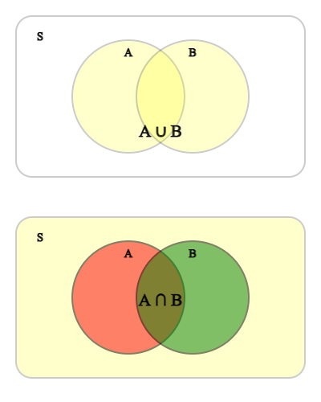
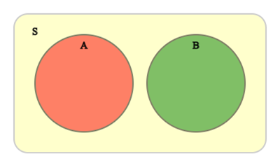
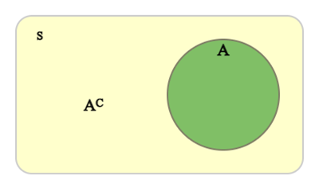
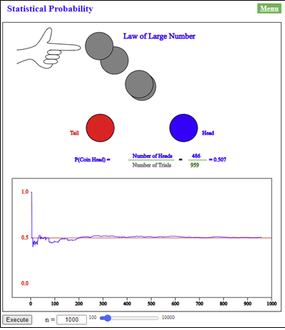
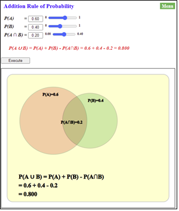
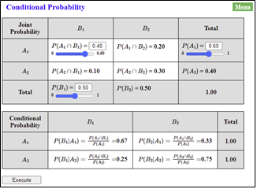
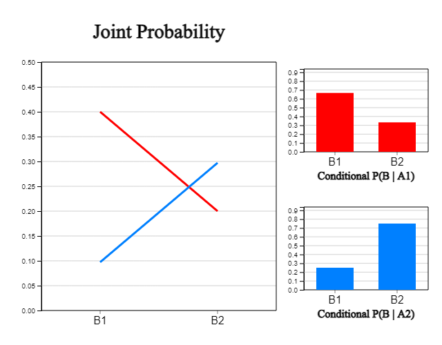
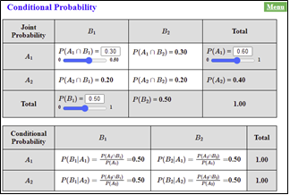
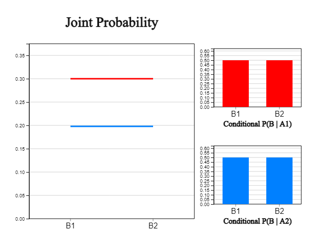

⭐ Think |
- When a coin is tossed, a head or a tail appears. |
💎 Explore |
What are common characteristics such as the above examples that appear frequently in our daily life? |
🎯 🎲 🎰 🎮2.1 Probability2.2 Addition Rule of Probability 2.3 Conditional Probability and Multiplication Rule of Probability |
Probability is the quantification of the likelihood that an event will occur on a scale between 0 and 1. Probability is widely used in decision making or future prediction by calculating probabilities for various situations. |
⭐ Think |
- When a coin is tossed, a head or a tail appears. |
💎 Explore |
What are common characteristics such as the above examples that appear frequently in our daily life? |
Tossing a coin, inspecting a product, and similar things are often repeated around us. We know that the possible consequences of these things are either 'head' or 'tail', 'good' or 'defective', but we don't know what the outcome will be. An experiment or observation in which similar things are repeated and all possible outcomes are known, but one outcome is determined by chance is called the trial.
The set of all possible outcomes that can occur in a trial is called the sample space, and a subset of this sample space is called the event. An event made up of one element is called the basic event.
The sample space is usually denoted by \(S\), and events are denoted by uppercase English letters, \(A, B, C, ...\), etc. For example, in a coin tossing trial, when ‘head’ is H and ‘tail’ is T, the sample space is as follows.
Events of ‘head’ and ‘tail’ are denoted as follows.
2) The event with odd numbers is as follows.
1) Sample space \(S\)
2) Event \(A\) with one ‘good’ and one ‘defective’
2) The event \(A\) with one ‘good’ and one ‘defective’ is as follows.
⏱ Practice 2.1 |
When a coin is tossed, let H be the event that the coin comes up ‘head’, and T be the event that it comes up ‘tail’. If you toss a coin twice, find the followings.
1) Sample space \(S\) |
⏱ Practice 2.2 |
When a dice is rolled twice, find the followings.
1) Sample space \(S\) |
With respect to two events \(A\) and \(B\) in the sample space \(S\), the event in which \(A\) or \(B\) occurs is denoted by \(A \cup B\), and the event in which \(A\) and \(B\) occurs simultaneously denoted by \(A \cap B\).

If event \(A\) and \(B\) do not occur simultaneously which is \(A \cap B\)= ø, two events are called mutually exclusive.

When there is an event \(A\), the event which \(A\) does not occur is called the complementary event of \(A\) and denoted by \(A^C\). Since \(A\) and \(A^C\) cannot occur at the same time, that is \(A \cap A^C\)= ø, the events \(A\) and \(A^C\) are mutually exclusive.

1) \(A \cup B\)
2) \(A \cap B\)
3) \(A^C\)
1) \(A \cup B\) = {1, 2, 3, 5}
2) \(A \cap B\) = {1, 3}
3) \(A^C\) = {2, 4, 6}
⏱ Practice 2.3 |
When a coin is tossed twice, \(A\) is an event in which ‘head’ appears more than once and \(B\) is an event in which ‘tail’ appears more than once. Are the two events mutually exclusive? |
⭐ Think |
If you toss a coin, the likelihood of getting head (H) or tail (T) seems to be half and half. Probability is a numerical representation of this likelihood. Is it correct to define the probability of getting head as a half? |
💎 Explore |
Let’s toss a coin 10, 50, or 100 times to find the number of heads and check their relative frequencies of head whether it is a half or not. |
An example of finding the relative frequency by actually tossing a coin 10, 50, or 100 times and writing down the number of heads is as follows.
| Number of tosses (\(n\)) | 10 | 50 | 100 |
|---|---|---|---|
| Number of heads (\(x\)) | 4 | 23 | 51 |
| Relative frequency (\(\frac{x}{n}\)) | 0.40 | 0.46 | 0.51 |
When the number of tosses is small, the relative frequency of the number of heads may not be 0.5. However, as the number of tosses of a coin increases, the relative frequency approaches 0.5. If you experiment more with the number of tossing a coin using a computer, it can be seen that the relative frequency gradually approaches 0.5 as shown in <Figure 2.4>. This relative frequency is called the statistical probability of an event that a coin comes up head.
|

<Figure 2.4> Simulation experiment for tossing a coin in 『eStatH』
|
|
If you select ‘Statistical Probability’ from 『eStatH』 menu, a window as shown in <Figure 2.4> appears. If you enter \(n\) = 10000 and click [Execute] button, the coin tossing will be executed 10,000 times, and you can observe the relative frequency of the number of heads of the coin. |
⏱ Practice 2.4 |
If a dice is made perfectly, the probability of getting each side when you roll the dice is likely \(\frac{1}{6}\). Roll the dice 12, 36, or 120 times to see if it is \(\frac{1}{6}\) really. |
In general, the probability of an event \(A\), denoted as \(P(A)\), is expressed as a numerical value between 0 and 1. Let \(n_A\) be the number of times an event \(A\) occurs when the trial is repeated \(n\) times. As the number of trials increases sufficiently, if the relative frequency \(\frac{n_A}{n}\) approaches a constant value \(p\), this value is called the statistical probability of the event \(A\) which is denoted as \(P(A) = \frac{n_A}{n}\).
✨ Statistical probability
Let \(n_A\) be the number of times an event \(A\) occurs when a trial is repeated \(n\) times. As the number of trials increases sufficiently, if the relative frequency \(\frac{n_A}{n}\) approaches a constant value \(p\), this value is called the statistical probability of the event \(A\) which is denoted as \(P(A) = \frac{n_A}{n}\).
| Age | Population (unit 1000) | Relative frequency |
|---|---|---|
| 0 - 14 | 6300 | 0.124 |
| 15 - 64 | 37,360 | 0.736 |
| 65 and over | 7,070 | 0.139 |
⏱ Practice 2.5 |
Youths aged between 13 and 18 was interviewd whether they are physically healthy or not in 2017 and the result is as follows.
|
It is not easy to define the probabilities of all events using statistical probabilities and use them for decision-making in reality. In order to apply the probability easily to the real problem, a mathematical probability based on the model was studied.
⭐ Think |
A dice is made in the shape of a cube, with one to six dots drawn on each side. |
💎 Explore |
Since a dice was made in the shape of a cube, the probability of each side when the dice was rolled would be equal to 1/6. There are many games that use this dice, but are these games fair? |
In order to obtain the statistical probability of each side of the dice, numerous trials of rolling the dice are required. The statistical probability obtained through sufficient trials will be close to 1/6. However, it is not easy in reality to do many trials to find the probability of one event.
If one dice is rolled, the sample space is {1, 2, 3, 4, 5, 6}. Assume that each element in the sample space has the same likelihood of occurrence. The probability of each element can be said to be 1/6. A mathematical probability is defined as the likelihood of an event under the rational assumption that each element in the sample space is equally likely to appear. When making decisions about real problem, this mathematical probability is used a lot.
In general, assuming that each element of the sample space \(S\) in a trial has the same probability of occurrence, the mathematical probability that an event \(A\) will occur denoted as \(P(A)\) is defined as follows.
In general, the statistical probability \(p\) of an event \(A\) approaches to the mathematical probability if the number of trials is large enough.
✨ Mathematical probability
Assume that each element of the sample space \(S\) in a trial has the same probability of occurrence. The mathematical probability that an event \(A\) will occur denoted as \(P(A)\) is defined as follows.
If \(S\) is the sample space, \(n(S)\)= 120이다.
If the event in which there are 2 good products and 1 defective product is \(A\), then \(n(A)\) is as follows.
Hence, the probability of the event \(A\) is as follows.
⏱ Practice 2.6 |
Let the event \(A\) be that an odd number of dots is appeared in a single dice roll. Find the mathematical probability that the event \(A\) will occur. |
⏱ Practice 2.7 |
When two different dice are rolled at the same time, find the mathematical probability that the sum of the dots appeared on the top of each dice is less than 5. |
⭐ Think |
Can an event have a probability more than 1? Or could it be less than zero? |
💎 Explore |
Probability is a number from 0 to 1 indicating the likelihood that an event will occur. |
Let's examine properties of the mathematical probability when each element in the sample space has the same probability of occurrence. Since an event \(A\) is a subset of the sample space \(S\), \(n(S)\) should be greater than or equal to \(n(A)\) which should be greater than 0 as follows.
If we divide each term by \(n(S)\), it becomes as follows.
Therefore,
If \(A\) is equal to the sample space \(S\), then
If \(A\) is an empty set ∅, then
✨ Basic properties of probability
Assume that each element in the sample space \(S\) has the same probability of occurrence and \(A\) is an event in the sample space.
1) \(0 \le P(A) \le 1\)
2) \(P(S) = 1\)
3) \(P(∅) = 0\)
The event \(A\) in which \(A\) is placed on the leftmost is the number of placing the remaining 3 people are in the second, third and right positions except for A, so 3×2×1 = 3!. Therefore, the probability that A is placed on the leftmost is as follows.
⏱ Practice 2.8 |
A company has 4 security guards (A, B, C, D). Every morning, two of these guards are randomly selected and one of them is assigned to the front door and the other to be the back door. Find the total number of cases where 4 people are placed at the front and rear doors, and the number of cases where A is placed at the front door. What is the probability that A will be placed at the front door? |
⭐ Think |
A survey of 50 middle school students found that 30 students watched the soccer game between Korea and Japan during the last Olympics on TV and 20 students watched the volleyball game. There were 10 students who watched both the soccer and volleyball game. |
💎 Explore |
What is the probability of a student who watched either the soccer or volleyball? |
If the event where a student watched the soccer game is \(A\) and the volleyball is \(B\), the event of watching either the soccer or volleyball is \(A \cup B\). Denote the number of element in each event of \(A\), \(B\) and \(A \cup B\) as \(n(A)\), \(n(B)\) and \(n(A \cup B)\) respectively, then they satisfy the following relation.
If we divide both sides by \(n(S)\), it becomes as follows.
Therefore, the probability that either the event \(A\) or event \(B\) occurs, denoted as \(P(A \cup B)\), is as follows.
This is called the addition rule of probability. In the above example, it becomes as follows.
If two events \(A\) and \(B\) are mutually exclusive, then \(P(A \cap B)\)= 0 and the addition rule becomes as follows.
✨ Addition rule of probability
The probability of either the event \(A\) or event \(B\) occurs, \(P(A \cup B)\), is as follows.
If two events \(A\) and \(B\) are mutually exclusive, then \(P(A \cap B)\) = 0 and the addition rule becomes as follows.
If you select ‘Addition Rule of Probability’ from 『eStatH』 menu, a window such as in <Figure 2.5> appears. Enter \(P(A)\) = 0.6, \(P(B)\) = 0.4, \(P(A \cap B)\) = 0.2 and click [Execute] button to observe the graph of the addition rule of probability. We can examine the addition rule by changing \(P(A)\), \(P(B)\) and \(P(A \cap B)\) using the slide bars.
|

<Figure 2.5> Addition rule of probability
|
⏱ Practice 2.9
|
Among 80 first-year students of business administration at a university, 50 students took economics, 30 students took political science, and 20 students took both courses. If you meet a first-year business administration student, what is the probability that this student will be taking either economics or political science? |
⭐ Think |
The probability of getting the number 1 or 2 when a dice is rolled is \(\frac{2}{6}\). |
💎 Explore |
What is the probability of getting remaining numbers 3, 4, 5, 6? |
The sample space of rolling a dice is \(S\) = {1, 2, 3, 4, 5, 6}. If the event in which the number of dots appeared is 1 or 2 is \(A\) = {1, 2}, the event of remaining numbers 3, 4, 5, 6 is called the complementary event and is denoted as \(A^C\) = {3, 4, 5, 6}. Since the event \(A\) and the complementary event \(A^C\) are mutually exclusive, the addition rule becomes as follows.
Since \(P(A \cup A^C ) = P(S) = 1\), The probability of the complementary event \(P(A^C )\) becomes as follows.
✨ Probability of the complementary event
If \(A^C\) is the complementary event of \(A\), the probability of \(A^C\) is as follows.
Also, the probability of finding two defective products is as follows.
Therefore, the probability of finding at least one defective product is \(\frac{3}{5} ＋ \frac{1}{5} = \frac{4}{5} \).
Another way to find this probability is to find the probability of an event in which there will be no defective items (this is called the complementary event of an event in which at least one defective item is found) and subtract it from 1. That is, the probability that at least one defective product is found is as follows.
⏱ Practice 2.10 |
When a family of 6 including the parents eat at the round table, what is the probability that the parents are not adjacent? |
⭐ Think |
Out of 40 third-year high school students, 24 were male students and 16 were female students. 8 male students and 4 female students wear glasses. |
💎 Explore |
|
The number of events given in this problem can be summarized in the following table by denoting the event of male student as \(A\), the event of female student as \(F\), the event of wearing glasses as \(B\), and the event of not wearing glasses as \(N\).
| Wearing Glasses (\(B\)) | Not Wearing Glasses (\(N\)) | Total | |
|---|---|---|---|
| Male (\(A\)) | \(n(A \cap B) = 8\) | \(n(A) = 24\) | |
| Female (\(F\)) | \(n(F \cap B) = 4\) | \(n(F) = 16\) | |
| Total | \(n(S) = 40\) |
The above table makes it easy to calculate the number of events not given by the problem as follows.
| Wearing Glasses (\(B\)) | Not Wearing Glasses (\(N\)) | Total | |
|---|---|---|---|
| Male (\(A\)) | \(n(A \cap B) = 8\) | \(n(A \cap N) = 16\) | \(n(A) = 24\) |
| Female(\(F\)) | \(n(F \cap B) = 4\) | \(n(F \cap N) = 12\) | \(n(F) = 16\) |
| Total | \(n(B) = 12\) | \(n(N) = 28\) | \(n(S) = 40\) |
1) If you randomly select one of the high school students, the probability of being a male student is as follows.
2) If you randomly select a student, the probability that this student is a male student and wears glasses is as follows.
3) When one of the male students is randomly selected, the probability that this student wears glasses is denoted as a symbol \(P(B|A)\), and, since the event of a male student \(M\) can be viewed as a sample space, it is calculated as follows.
\(P(B|A)\) is called the conditional probability of wearing glasses (\(B\)) when a male student is selected (\(A\)).
If \(S\) is a sample space of a statistical experiment, the conditional probability of the event \(B\) when the event \(A\) occured is as follows.
If we divide both numerator and denominator by \(n(S)\), the conditional probability becomes as follows.
✨ Conditional probability
The conditional probability of the event \(B\) when the event \(A\) occurred is as follows.
In the table above, the probabilities of two events occurring at the same time are summarized as follows. This is called a joint probability table.
| Wearing Glasses (\(B\)) | Not Wearing Glasses (\(N\)) | Total | |
|---|---|---|---|
| Male (\(A\)) | \(P(A \cap B) = \frac{8}{40}\) | \(P(A \cap N) = \frac{16}{40}\) | \(P(A) = \frac{24}{40}\) |
| Female(\(F\)) | \(P(F \cap B) = \frac{4}{40}\) | \(P(F \cap N) = \frac{12}{40}\) | \(P(F) = \frac{16}{40}\) |
| Total | \(P(B) = \frac{12}{40}\) | \(P(N) = \frac{28}{40}\) | \(P(S) = 1\) |
In this table, the probability \(P(A \cap B) = \frac{8}{40}\) can be calculated by multiplying the probability of male students \(P(A) = \frac{24}{40}\) with the conditional probability \( P(B|A) = \frac{8}{24} \).
It is called the multiplication rule of probability. This formula can be derived if you multiply \(P(A)\) on both side of the definition of the conditional probability \( P(B|A) = \frac{P(A \cap B)}{P(A)} \).
The probability \(P(A \cap B) = \frac{8}{40}\) can be calculated by multiplying the probability of wearing glasses \(P(B) = \frac{12}{40}\) with the conditional probability \( P(A|B) = \frac{8}{12} \).
In general, the multiplication rule of probability is as follows.
✨ Multiplication rule of probability
The multiplication rule of two events \(A\) and \(B\) is as follows.
Suppose that the joint probability table on gender of students and wearing glasses is as follows.
| Wearing Glasses (\(B\)) | Not Wearing Glasses (\(N\)) | Total | |
|---|---|---|---|
| Male (\(A\)) | \(P(A \cap B) = \frac{12}{40}\) | \(P(A \cap N) = \frac{12}{40}\) | \(P(A) = \frac{24}{40}\) |
| Female(\(F\)) | \(P(F \cap B) = \frac{8}{40}\) | \(P(F \cap N) = \frac{8}{40}\) | \(P(F) = \frac{16}{40}\) |
| Total | \(P(B) = \frac{20}{40}\) | \(P(N) = \frac{20}{40}\) | \(P(S) = 1\) |
Here, the probability of all students wearing glasses \(P(B) = \frac{20}{40} = \frac{1}{2}\) is the same as that of male students \( P(B|A) = \frac{12}{24} = \frac{1}{2} \). If the occurrence of an event \(A\) does not affect the probability that the event \(B\) will occur, that is,
it is said that two events \(A\) and \(B\) are independent of each other. On the other hand, if two events \(A\) and \(B\) are not independent, it is said two events are dependent.
If two events \(A\) and \(B\) are independent, the rule of multiplication becomes as follows.
Inversely, if \( P(A \cap B) = P(A) × P(B) \) and \(P(A) \ne 0\), the conditional probability becomes as follows.
Therefore, two events \(A\) and \(B\) are independent.
✨ Multiplication rule of probability when two events are independent
A necessary and sufficient condition that two events \(A\) and \(B\) are independent is as follows.
In the table above, all events for the joint probability are independent of each other. In this case, it is said that the gender variable and the variable of wearing glasses are independent. Looking at the table, the probabilities of "wearing glasses" and "not wearing glasses" events of all students are 0.5 and 0.5, respectively. When the two variables are independent, these ratios are maintained for each male and female student.
|
When 'Conditional Probability' is selected from 『eStatH』 menu, a window such as <Figure 2.6> appears. Here, if the joint probability is adjusted, the conditional probability can be observed below it, and a line graph such as <Figure 2.7> and a bar graph of the conditional probability for each row can be observed. |


If you adjust the joint probability as \(P(A_1 \cap B_1 )\) = 0.30, \(P(A_1 )\) = 0.60 becomes as in <Figure 2.8>. <Figure 2.9> displays a line graph and conditional probability in case of independent events.


⏱ Practice 2.11
|
Let \(A\) be the event that the number of dots by drawing a dice is odd and \(B\) be the event that the number of dots is less than 3. Examine whether the two events are independent or dependent |
⏱ Practice 2.12
|
The distribution of 30 freshmen at a university by gender and region is as follows.
When a student is selected, is the case of Male and Seoul independent of each other? |
*** Select an answer and click [SUBMIT] button.